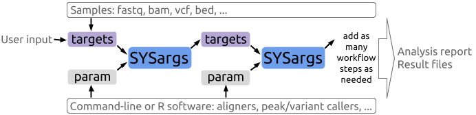

Author: Thomas Girke (thomas.girke@ucr.edu)
Last update: 09 July, 2016
Alternative formats of this tutorial:
HTML,
.Rmd,
.R
Background
systemPipeR provides utilities for building and running automated end-to-end analysis workflows for a wide range of next generation sequence (NGS) applications such as RNA-Seq, ChIP-Seq, VAR-Seq and Ribo-Seq (Girke , 2014). Important features include a uniform workflow interface across different NGS applications, automated report generation, and support for running both R and command-line software, such as NGS aligners or peak/variant callers, on local computers or compute clusters. The latter supports interactive job submissions and batch submissions to queuing systems of clusters. For instance, systemPipeR can be used with most command-line aligners such as BWA (Li , 2013; Li et al., 2009), TopHat2 (Kim et al., 2013) and Bowtie2 (Langmead et al., 2012), as well as the R-based NGS aligners Rsubread (Liao et al., 2013) and gsnap (gmapR) (Wu et al., 2010). Efficient handling of complex sample sets (e.g. FASTQ/BAM files) and experimental designs is facilitated by a well-defined sample annotation infrastructure which improves reproducibility and user-friendliness of many typical analysis workflows in the NGS area (Lawrence et al., 2013).
Motivation and advantages of sytemPipeR environment:
- Facilitates design of complex NGS workflows involving multiple R/Bioconductor packages
- Common workflow interface for different NGS applications
- Makes NGS analysis with Bioconductor utilities more accessible to new users
- Simplifies usage of command-line software from within R
- Reduces complexity of using compute clusters for R and command-line software
- Accelerates runtime of workflows via parallelzation on computer systems with mutiple CPU cores and/or multiple compute nodes
- Automates generation of analysis reports to improve reproducibility
A central concept for designing workflows within the sytemPipeR environment is the use of workflow management containers called SYSargs (see Figure 1). Instances of this S4 object class are constructed by the systemArgs function from two simple tabular files: a targets file and a param file. The latter is optional for workflow steps lacking command-line software. Typically, a SYSargs instance stores all sample-level inputs as well as the paths to the corresponding outputs generated by command-line- or R-based software generating sample-level output files, such as read preprocessors (trimmed/filtered FASTQ files), aligners (SAM/BAM files), variant callers (VCF/BCF files) or peak callers (BED/WIG files). Each sample level input/outfile operation uses its own SYSargs instance. The outpaths of SYSargs usually define the sample inputs for the next SYSargs instance. This connectivity is established by writing the outpaths with the writeTargetsout function to a new targets file that serves as input to the next systemArgs call. Typically, the user has to provide only the initial targets file. All downstream targets files are generated automatically. By chaining several SYSargs steps together one can construct complex workflows involving many sample-level input/output file operations with any combinaton of command-line or R-based software.

The intended way of running sytemPipeR workflows is via *.Rnw or *.Rmd files, which can be executed either line-wise in interactive mode or with a single command from R or the command-line using a Makefile. This way comprehensive and reproducible analysis reports can be generated in PDF or HTML format in a fully automated manner by making use of the highly functional reporting utilities available for R. Templates for setting up custom project reports are provided as *.Rnw files by the helper package systemPipeRdata and in the vignettes subdirectory of systemPipeR. The corresponding PDFs of these report templates are available here: systemPipeRNAseq, systemPipeRIBOseq, systemPipeChIPseq and systemPipeVARseq. To work with *.Rnw or *.Rmd files efficiently, basic knowledge of Sweave or knitr and Latex or R Markdown v2 is required.